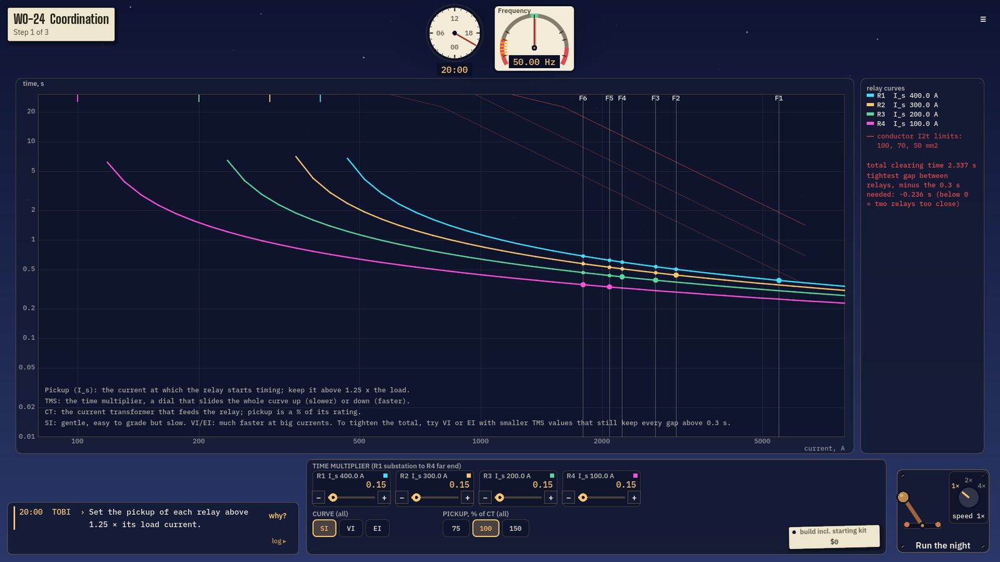

What it teaches. Fault level, inverse-time relays and how they grade, clearing time, and the merit order of a market.
5 jobs: WO-23 to WO-27. All of its jobs are in the classic 2D look for now.

Classic look. WO-24 Coordination: four relay curves and their grading margins
WO-23 Fault Level Classic look
The State · Ironbridge substation, 20:00
Goal
Two new 25 MW captive generators raise the fault level of the 33 kV industrial substation. A 3-phase fault will hit a feeder just outside its breaker: make every breaker able to break it, at the least cost, and keep the estate secure.
Budget: $490,000.
Lamps: pass the job; spend at most $440,000; the third needs the same spend and n-1 secure (survives one transformer out), estate voltage at least 0.909 pu with one transformer out, prediction within 2 %.
If it fails
Breaker F1 was asked to break 30.2 kA (1726 MVA) but is rated 25 kA, so it failed to open. Breaker-failure protection opened its neighbours 0.5 s after the fault and the whole estate went dark for 3 hours (162 MWh not served).
That is the engine's own sentence for a first-try build that misses. Yours will name your numbers.
On the radio
ADA A fault is a short circuit: nothing but the wires and machines behind it limits the current. Add a generator and you add a source.
VANCE Those 25 kA breakers were bought for the old fault level. I will not pay for a bigger board than the fault needs.
Coach steps (hints that show how to build)
Predict the fault current at the feeder: add up the impedances behind it and work out I_f in kA before you run.I_f = V / Z_th: the transformer paths are in series with the grid, and the sources are in parallel at the busbar.
Make the board able to break it: a bigger breaker, a split bus, a reactor, or a higher-impedance transformer.Every way down trades something: money, security of supply when a transformer trips, or voltage under load.
Run the fault.A breaker is only as good as the largest current it can interrupt.
fault leveltheveninbreaking capacitybus split
WO-24 Coordination Classic look
The State · Hollin Road feeder, 20:00
Goal
A 7 km 11 kV feeder has four overcurrent relays, R1 at the substation to R4 at the far end. Set curve, pickup and time multiplier so the relay nearest each of six faults clears it, every relay above waits at least 0.3 s longer, and nothing trips on load or burns the line.
Lamps: pass the job; the card says what the second and third ask for.
If it fails
Fault F2: relay R2 operates in 0.442 s but the relay above it, R1, in 0.506 s: only 0.064 s later, and the interval needs 0.3 s. Both opened and healthy customers upstream of the fault lost supply (59.4 MWh).
That is the engine's own sentence for a first-try build that misses. Yours will name your numbers.
On the radio
ADA Every relay on the feeder sees the same fault. Only the one closest to it should act; the rest are the second line of defence and must wait.
TOBI Last winter the whole feeder went dark for a rabbit on a spur. Same settings everywhere, they said.
Coach steps (hints that show how to build)
Set the pickup of each relay above 1.25 × its load current.A relay must ignore the evening load and still see the weakest fault in its zone.
Grade the time multiplier: smallest at the far end, larger toward the substation.Upstream relays are the backup: at the same fault current they must wait longer than the relay below by the 0.3 s coordination interval.
Run the six faults.Each fault is one test of the grading: the nearest relay must win by 0.3 s.
idmtgradingselectivityconductor i2t
WO-25 Clear It in Time Classic look
The State · Highfell Falls, 20:00
Goal
A fault on one circuit of the 400 kV line beside the Highfell Falls hydro plant makes the rotor speed up. Choose the relay and the breaker so the fault clears before the critical clearing time, at the least cost.
Budget: $600,000.
Lamps: pass the job; spend at most $551,000; the third needs the same spend and clear at least 50 ms before the critical time.
If it fails
The fault cleared after 484 ms (384 ms relay and 100 ms breaker) but the critical clearing time is 164 ms. The rotor was already at 198° when the fault cleared, passed the unstable angle 130° at 0.48 s and slipped a pole: the plant tripped out of step.
That is the engine's own sentence for a first-try build that misses. Yours will name your numbers.
On the radio
ADA While a fault holds, the generator cannot deliver its power. The rotor takes the difference as speed.
VANCE A breaker that opens in two cycles costs twice the one that takes five. Show me the cycles that matter.
Coach steps (hints that show how to build)
Write your prediction of the critical clearing angle, in degrees, in the box before you choose.Equal areas: the rotor gains speed while the fault holds and must lose it again before the angle passes delta_cr.
Pick the relay: zone-1 distance, zone-2 distance, or an inverse-time overcurrent setting.A distance relay trips a fault on the first 80 % of the line in 30 ms; an inverse-time relay takes longer the smaller the current is.
Pick the breaker's interrupting time: 2, 3 or 5 cycles.At 50 Hz a cycle is 20 ms, and every 20 ms is more speed for the rotor.
Run the fault.The critical clearing time is where the accelerating area equals the decelerating area.
Run tomorrow's 24 hours for six plants across two areas joined by a 220 kV corridor. Commit the plants and choose how the day is dispatched, so the corridor never overloads and nobody is left in the dark, at the least cost.
Lamps: pass the job; the card says what the second and third ask for.
If it fails
At 16:30 the corridor carried 460 MW against a rating of 450 MW and tripped. Cheapest-first and equal-lambda dispatch both ignore the wire; the load area went dark (0 MWh not served).
That is the engine's own sentence for a first-try build that misses. Yours will name your numbers.
On the radio
TOBI Coal is cheap and it sits in the north. The city is in the south. In between there is one wire.
ADA When the wire is full the south pays a different price from the north. That difference is what the wire is worth.
Coach steps (hints that show how to build)
Predict the price in the load area at 20:00 (per MWh, in the money of your region).When the corridor is full, the load area's marginal plant is the expensive one next to the city, not the cheap coal in the north.
Choose the dispatch rule: cheapest first, equal incremental cost, or equal incremental cost with the corridor.Only the third knows the wire has a limit.
Commit the plants: the hours each one is on.Coal takes hours to warm up and cannot run below its minimum; the peaker only has to be there for the evening.
Run the day.The evening peak is where the corridor is tested.
merit orderlambda dispatchcongestionwater value
WO-27 Exam: Faults & λ Classic look
The State · The exam hall, 20:00
Goal
Exam day. Predict five numbers by hand, then use what you know: the substation has grown, so rate its breakers for the fault level and set tonight's 3-unit dispatch at the least cost.
Budget: $1,200,000.
If it fails
Breaker F1 was asked to break 41.8 kA (2392 MVA) but is rated 25 kA, so it failed to open. Breaker-failure protection opened its neighbours 0.5 s after the fault and the whole estate went dark for 3 hours (162 MWh not served).
That is the engine's own sentence for a first-try build that misses. Yours will name your numbers.
On the radio
NIA My exam is a week away, and these are the same questions. Show me how you would work them.
ADA Same arithmetic as the field. Only the numbers change.
Coach steps (hints that show how to build)
Predict the exam numbers first: 3-phase fault kA, SLG kA, the two lambdas, and the 60 Hz critical clearing time.Working them by hand first is how the method sticks; the engine will check you.
Rate the breakers of the grown board.Size the breaker for the larger of the 3-phase and the single line-to-ground fault.
Set tonight's dispatch of the three units.Equal incremental cost, unless a unit is held at a limit.
Run the exam.The engine answers every question the same way you do.
fault levelsequence networkslambda dispatchequal area